12:00
在浩瀚的太平洋上，散落着无数的珍珠，帕劳就是其中的一颗，看过葛优电影的人都会记得这句台词，传多了似乎也贬低了帕劳。今天要辗转飞去这个传说中的珍珠岛国，才真正意识到为什么这里是美国国家地理推荐的50个值得去的目的地，我决定从今天起写帕劳日记，我要把这个在2006年的年末，一个特别的体验经历记录下来。
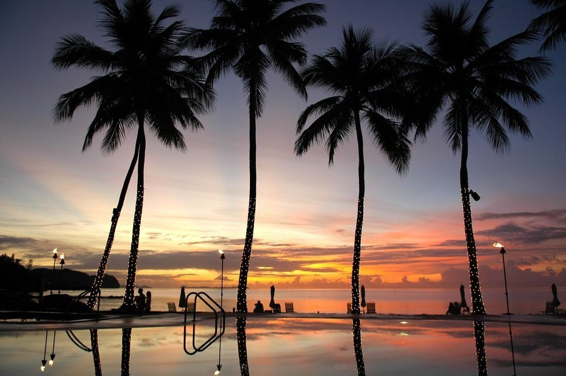
在浩瀚的太平洋上，散落着无数的珍珠，帕劳就是其中的一颗，看过葛优电影的人都会记得这句台词，传多了似乎也贬低了帕劳。今天要辗转飞去这个传说中的珍珠岛国，才真正意识到为什么这里是美国国家地理推荐的50个值得去的目的地，我决定从今天起写帕劳日记，我要把这个在2006年的年末，一个特别的体验经历记录下来。
从北京经马尼拉辗转来到这里，从马尼拉出发的飞机非常空，我也得以用坐席的票价享受了卧铺。帕劳是落地签，由于此次是跟随几位常来帕劳的人一起，所以入关非常顺利，同时移民官还告诉我们帕劳海关关长以及移民局负责人向我们问好，非常欢迎我们来到帕劳。
帕劳是个节奏比较慢的国家，即使在凌晨2点，司机还是不紧不慢地开车，路上没有任何红绿灯，车辆也不多，但是因为我们前面有辆车开得非常缓慢，我们也只能跟着，据说这是帕劳开车的规矩，即使官员的车也要如此，因此7公里的路我们开了50分钟。
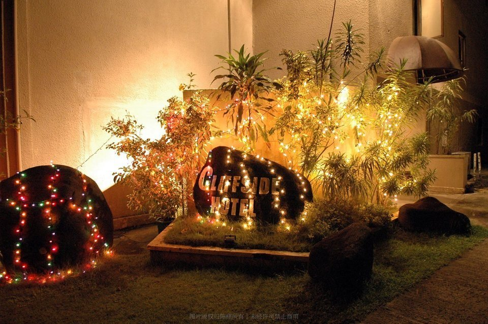
我的酒店大堂还没有北京某些别墅的玄关大，但是很亲切和温馨，由于到得太晚，再加上出门的时候有些发烧，一到酒店直奔房间睡了。
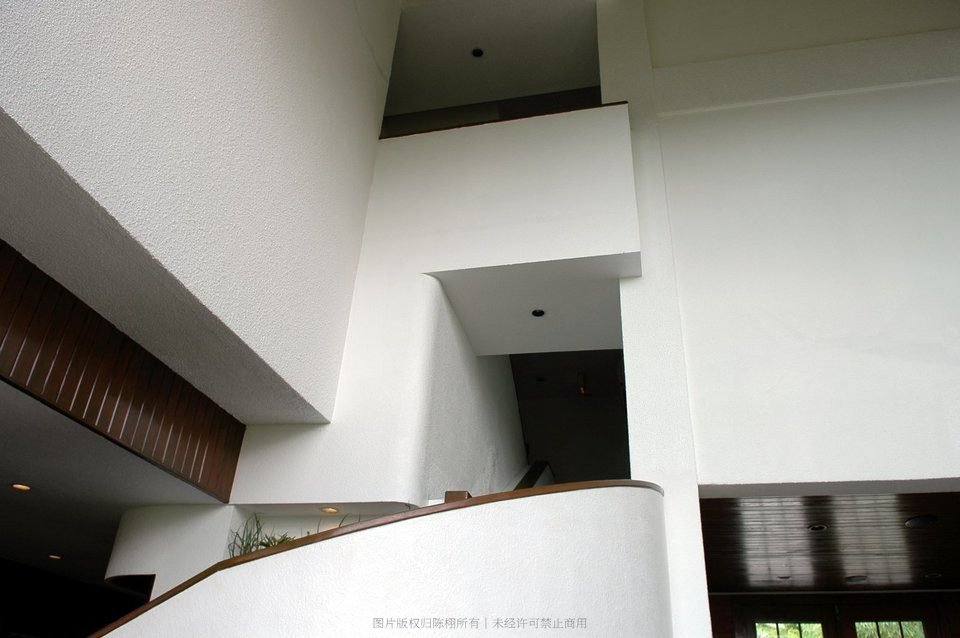
早上原本计划晚点起，不知是兴奋还是生物钟已经定型了，没等叫早就洗漱完毕了，坐在大堂里才发现酒店的设计非常别致，虽然不大但是错落有致，不同的位置有不同的空间感。 在餐厅用早餐才知道酒店不超过20间房，更像是个世界之家，坐在大厅里看到出出进进的人，有英国的、韩国的、台湾的、菲律宾的，还有一些看不出国籍的盆友。
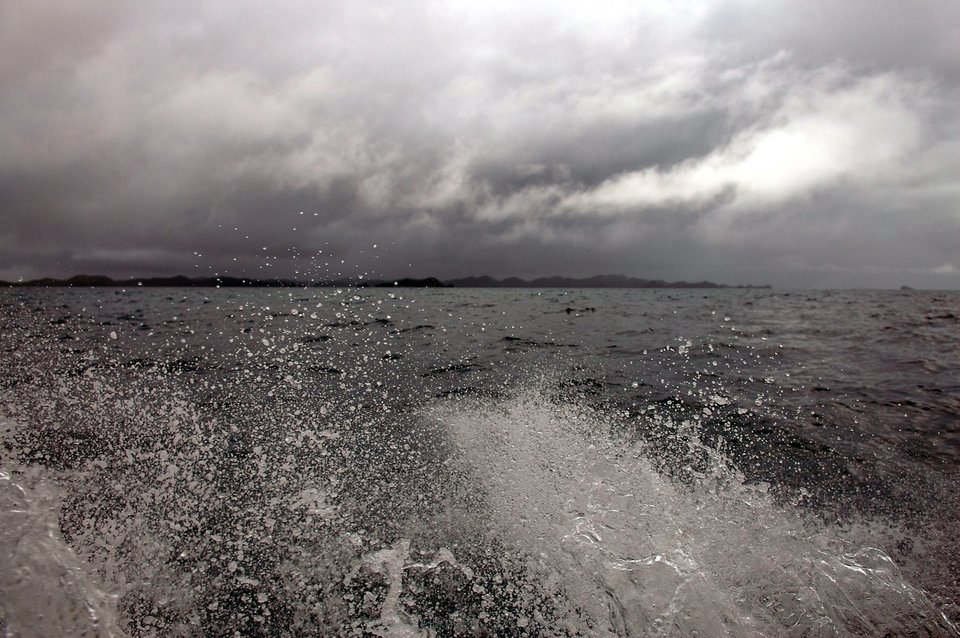
11点半我被接到PPR和另几个人会合，一起出海了。上午一直在下雨，时大时小的，海上也多少有些风浪，我努力想用清晰的海浪定格来证明我们正在乘风破浪。
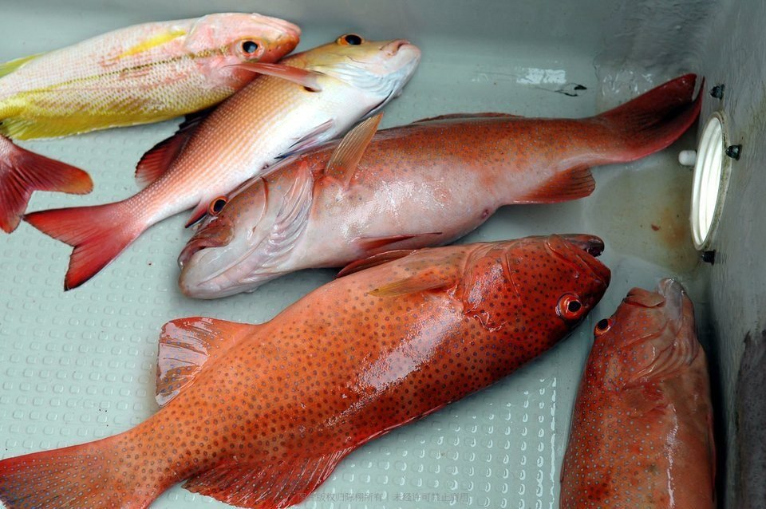
午餐是新鲜的石斑鱼，本该自己动手钓的，但是担心时间来不及以及的确手潮，我们向路过的渔船讨要了几条，他们也爽快地给了，随后他们又返回头去捕捞了，因为午餐的食材给我们了，自己还是要想办法填饱肚子的。 我当时就感叹帕劳的查莫洛人真是善良淳朴呀……当然陪同我们的也是帕劳家喻户晓的名人。
没有水下摄影的设备，只记得最初很迫切要找水母，后来上下左右前后全是水母的时候，有些怕了，太多了！有的也挺大……一种变异的无毒水母。
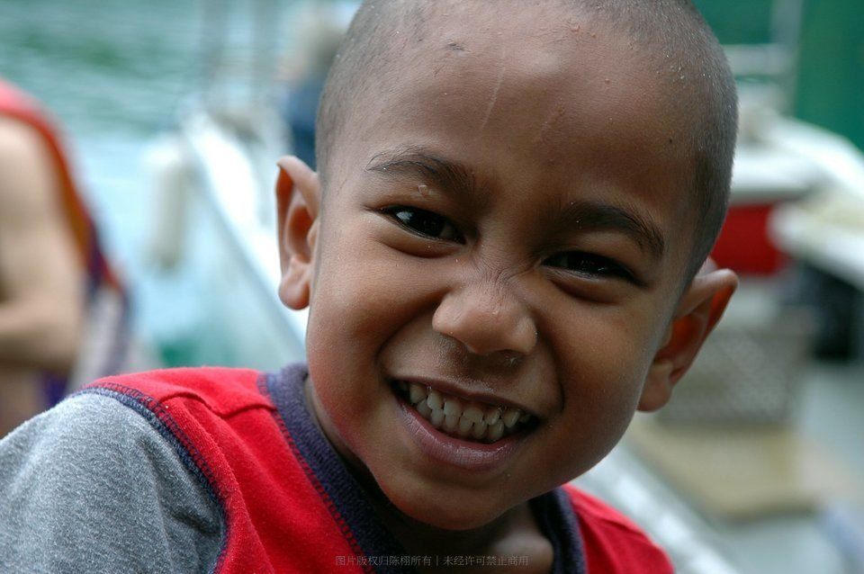
他始终不愿意配合我拍照，我不知道在查莫洛的信仰中是否也有照相会被摄走魂魄之说，当然我的手更快了，还是留下了他天真的笑脸。
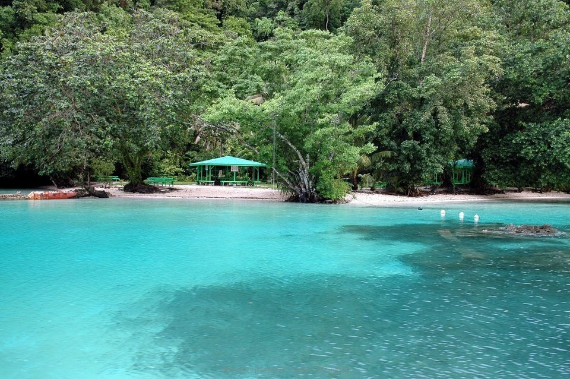
这是美国《幸存者》的拍摄地，据说当时分了两组，这是分组赛时一组的大本营，最后决胜负的时候也是在这里。据说赢得比赛的人也是经过勾心斗角才取得胜利的，真是糟蹋了美景。
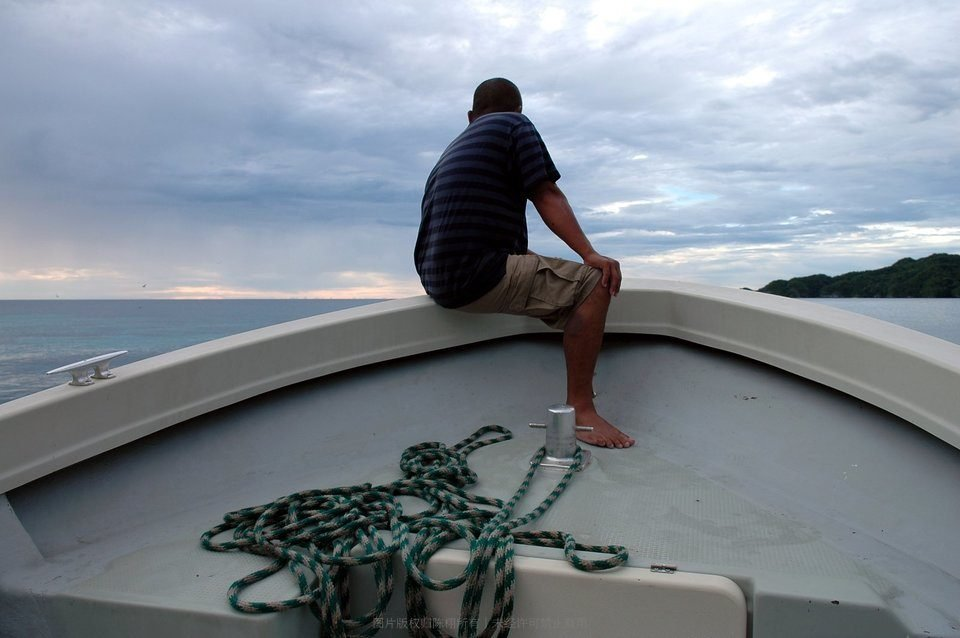
“寻找下一个港湾，我是等爱的水手。” 在归航的船上，忙了半天的船员终于可以休息一下了，静静地享受着海风，不知道他心里在想什么？也许我们的快乐对于他来说是最大的满足。
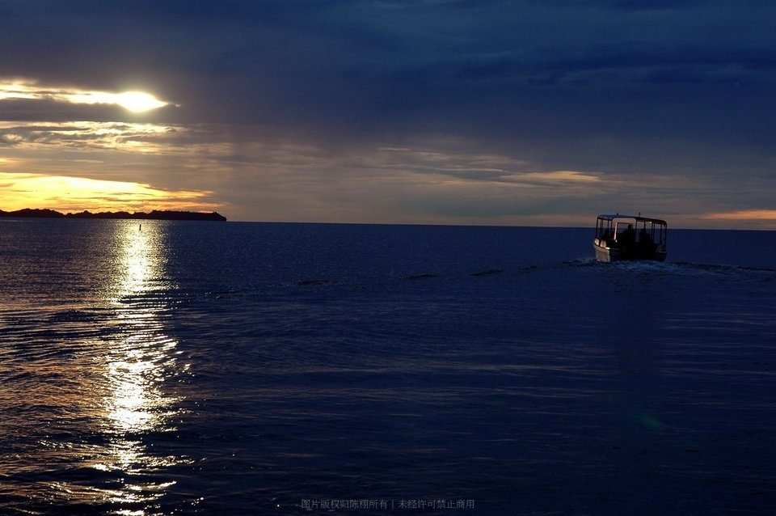
太平洋日落是浪漫的，几对韩国男女登上了一条浪漫之船，曾几何时我们也在塞班享用过美丽的太平洋日落晚餐。中国男人什么时候能像韩国人一样浪漫，即使再肉麻再醋熘也无所谓。
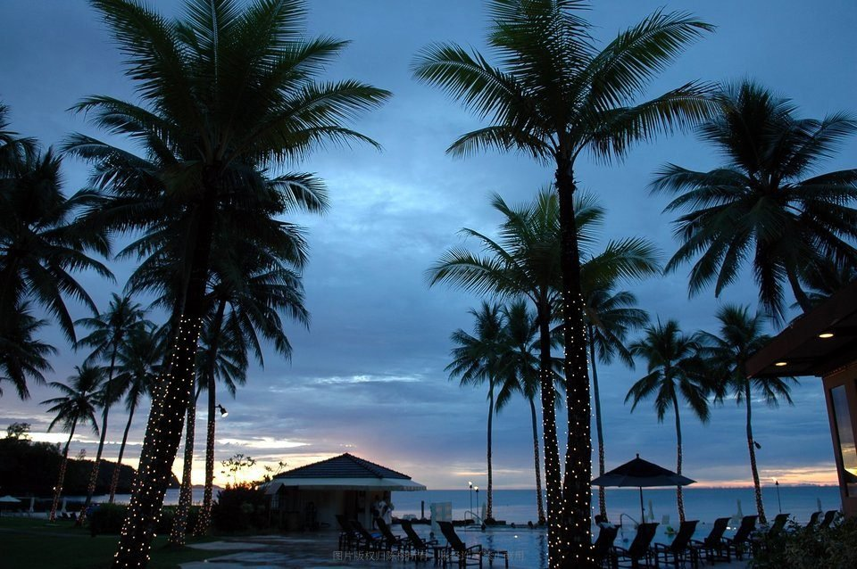
标准的海岛片，如果来帕劳不出一两张这样的片子，简直是白来了。
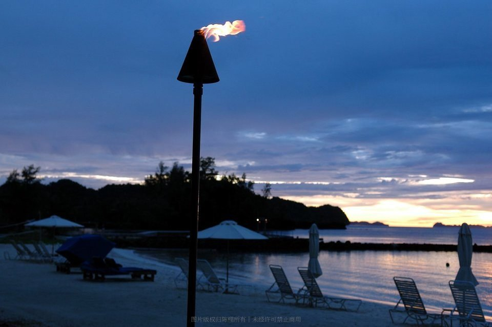
晚餐是州长等政要请客，丰盛、实在、应酬。 回到温馨的Cliffside酒店，到现在为止我一直都还摊在大堂的沙发里写《帕劳日记》，回想今天去过的水母湖，至今还有些紧张，那里是世界上独一无二的无毒水母湖，在里面游泳随时可以碰到它们，用浮潜镜能看到几百万只大的小的水母绝对震撼。只是这次没有准备好水下摄影的设备，错过了水下的美景，也许遗憾是下一次再来的动力吧。 明天是个钓鱼的日子，据说同行的人上次竟然钓了一条300磅的金枪鱼，有1.6米，希望明天好运气。
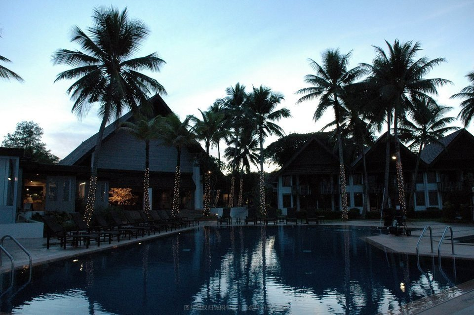
帕劳太平洋度假村是当地最好的酒店，280美金一晚，茅草屋顶很有民族风。同时这里也是出海的码头，这已经是第二次从这里上船了。
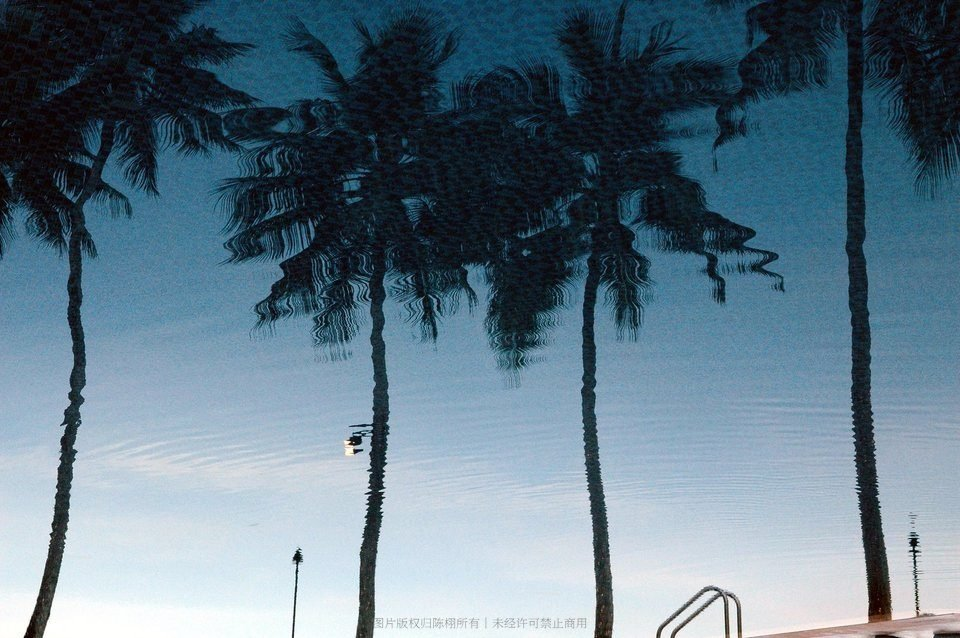
据说今天要去很远的地方，游泳池里静静地倒映着椰树，大家都还在呼呼大睡吧。我比鸡起得都早，6点钟就赶到PPR的码头了，还没有睡醒。
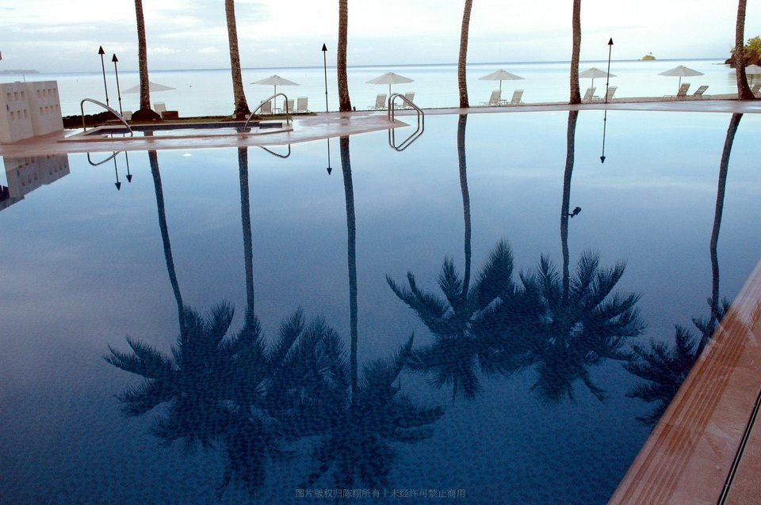
7点准时开船了，在享受了速度的快感之后，很快就觉得在船上是一种煎熬，甚至有点恶心。望着茫茫大海不知道要去哪儿，我只能找个地方平躺下来，可能是昨晚睡得太少，竟然打起呼噜来，我几次都是被自己的呼噜吵醒的，不过这样也好，至少暂时可以把恶心抛到一边去，在这一刻工作、生活、压力显得都不重要了，只要找一个能让自己舒服点的姿势就够了。
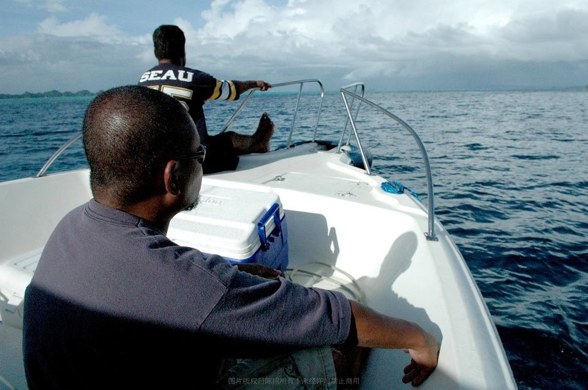
不知是在第几次醒来的时候，我发现其他人也都躺平了，兴奋劲儿也过去了，不过只有当地两个船员还似乎很平静，正所谓没有大喜也就不会有大悲吧。
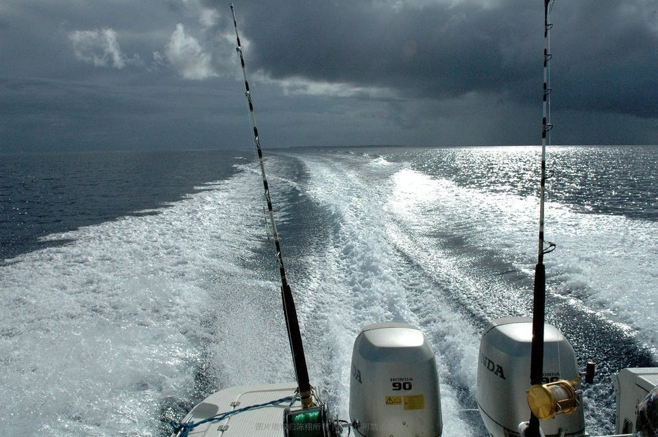
午餐是从PPR酒店带来的便当，有饭团和炸鸡水果什么的，因为一直在睡觉没什么胃口，随便胡乱吃了几口。 饭后的时间是痛苦的， 又开始恶心了，早上还可以因为困很快地睡过去，但是这会儿无论如何睡不着，谁说吃过饭血液都到胃里帮助消化就犯困？我比任何时候都清醒，感觉着人在天旋地转，甚至胃里食物也跟着一样地转，旋转孕育了力量，最终我忍无可忍，在船边爆发了，午餐甚至早餐统统吐出来了，唉！在船上的时间过得真慢呀。
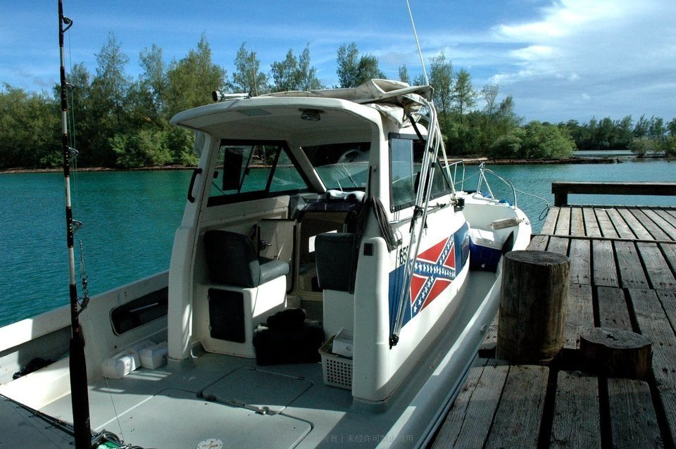
船老大为了照顾我的身体，提议到最近的小岛上休息30分钟，重新回到陆地上明显感觉人还在晃。 这是个很安静的岛，岛上有人，还有很多生锈腐烂的钢铁，老大向我们介绍这是二战中非常残烈的一个战场，美国人为了夺得这个岛在这里损失了3000大兵，据说夏威夷联合公墓中有很多大兵死于帕劳，日军损失30000，这个岛那个年代战死的军人比现在整个帕劳的人口还要多。
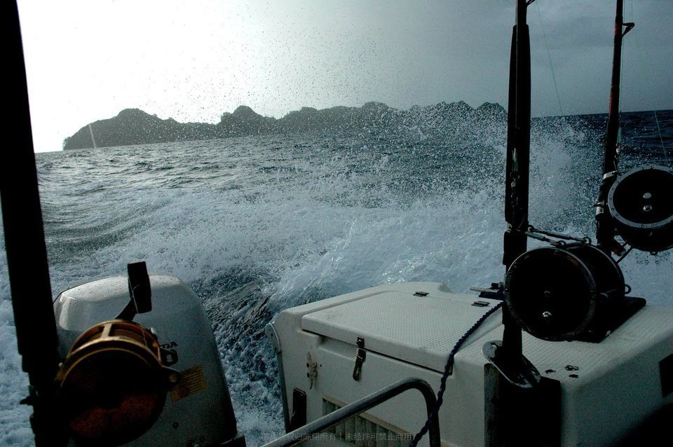
再次出发了，海上又有风浪了，短暂的休息还真的很奏效，目标PPR码头冲冲冲！
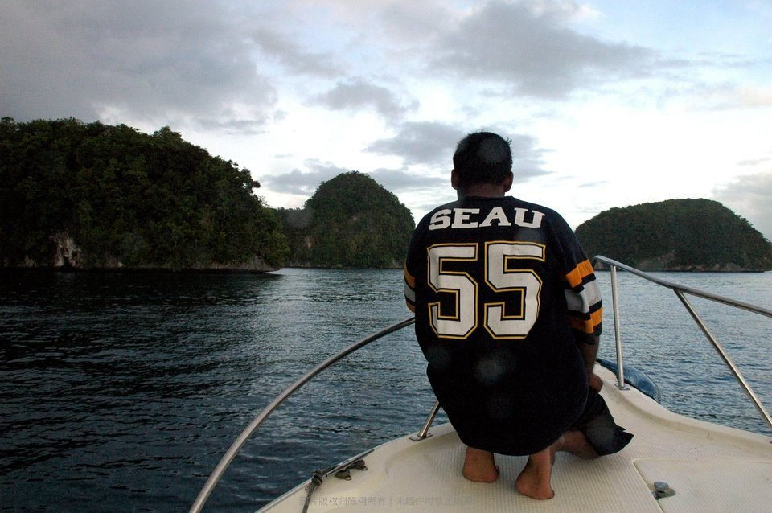
终于看到希望了，走进了帕劳标志性的小岛群，我给命名的，天气也平静下来，心情也舒缓下来了，看看表已经快下午5点了，在船上已经10个小时了。
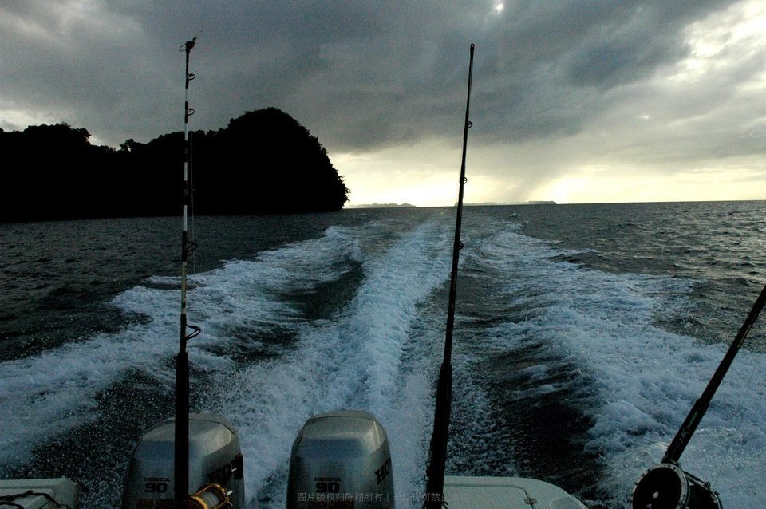
望着背后的黄昏暮色，88了海上钓鱼经历，下次这个项目一定不能参加了，煎熬之旅。 今天钓鱼还是有收获的，一条WAHOO至少60磅，还有几条别的，这些鱼看起来很具攻击性，尖尖的嘴巴，据说它一口能把人的手指头咬下来，当然最终还是人类是强者，晚餐的内容之一是WAHOO的刺身和椒盐炸的WAHOO。 又到了写日记的时间了，我还在晃，希望睡一觉能好些。 另外，同行的人告诉我我的酒店中文名字是“悬崖边酒店”看来是要让住在这里的人居安思危了。
今天是个没有叫早的早晨，不慌不忙地起来，用过水果早餐后就坐在酒店大堂里上网，和国内的同事朋友聊聊MSN。
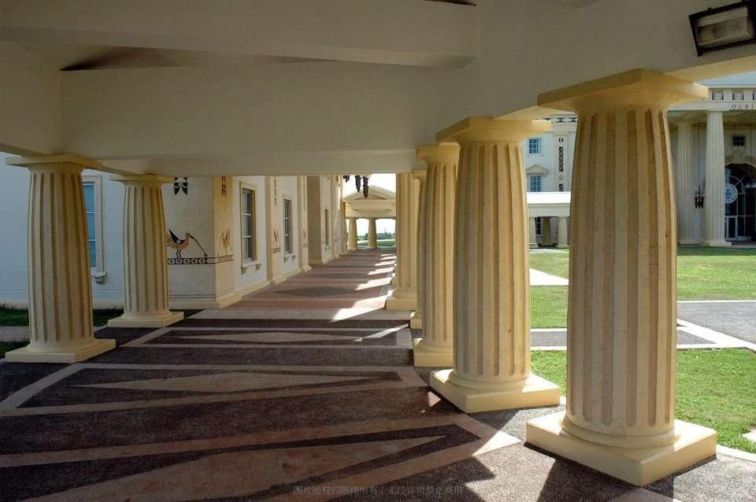
下午安排了公务活动，要穿有领有袖的衣服，因为下午要见帕劳议会的领袖。帕劳的大领导们都在新首都办公，一路上听介绍知道新首都是在原来大酋长的故乡，是在今年10月1日帕劳独立日启用的一个新建筑，原来请夏威夷设计师设计的，是传统式的，但是被否定了，重新设计的有点像白宫但又有些希腊雅典的味道。但是新首都只有这一个建筑，其他的要慢慢迁过来。
在这里有立法、司法、行政各部门，我们和议会领袖愉快地交谈了1个小时，当然不是我，是同去的朋友，通过他们的谈话，可以了解很多关于帕劳的事情，比如建国的历史、加入联合国的过程、经济状况、发展前景……从理性的层面了解了这个只有12年历史又和我们同一天建国的国家。
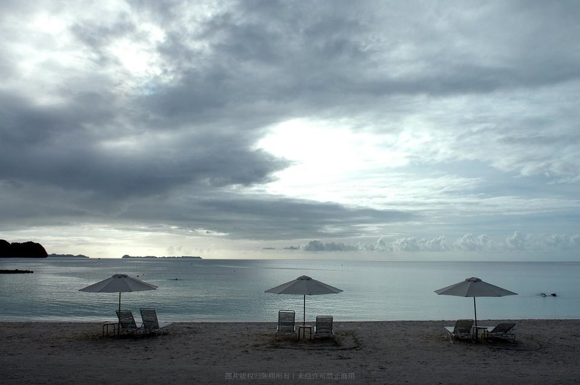
下午很早就回到酒店了，准备在酒店的海域游泳浮潜，本来同行的人说要用东西喂鱼好吸引鱼群，据说以前他们来就是这么做的，但是这次被告知这种做法被禁止了，因为要保护环境，看来他们在大力吸引游客的同时，已经开始注重环保了。
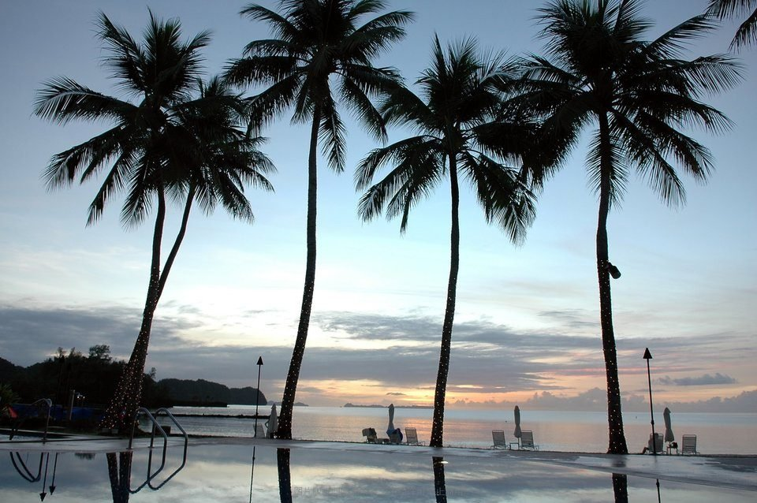
酒店一天一个特色晚餐，今天的是意大利餐，酒店放着Gregorian教皇合唱团今年圣诞特辑《A Spaceman Came Travelling》，让我想起回想起齐秦的直到世界末日，浪漫极了……我们的晚餐是中餐馆的鸳鸯火锅，能在遥远的西太平洋中吃到家乡口味对于我来说真是个惊喜。
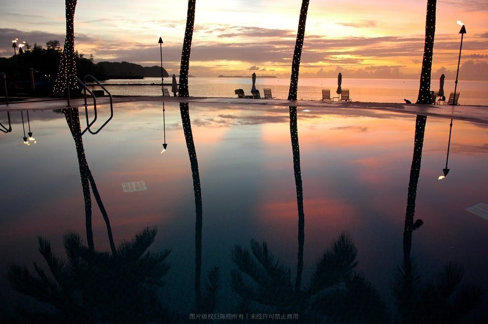
席间主人告诉我们帕劳最早的历史可以追朔到400多年前，一个西班牙船队因为触礁才找到帕劳，为了能继续航行，用一面镜子换取了25根大木头和若干劳动力用以修船，同时还用叉子勺子作为工资叫帕劳人做这做那，并且以带酋长的儿子去英国过好日子为条件，换取了半年的补给顺利地离开了帕劳，并承诺会再次来帕劳的。据说被带走的酋长儿子在英国生活得很好，今天在伦敦有一条街名就是以酋长儿子的名字命名的，我想这也是帕劳人这些年可以出去留学后才知道的吧。当年，这一别无异于诀别了。
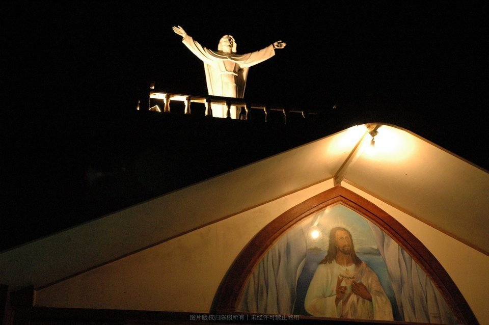
西班牙人真的又回来了，他们带来了传教士、医生、教师，因此今天帕劳90%的人信奉天主教，10%信奉基督教，所有人都有信仰并安居乐业。 晚餐后，主人特意带我们参观了KOROR最大的天主教堂，由于今天有圣诞前的聚会，所以我们去的时候一群人刚刚要散去。这里和一家教会小学也一体的，包括主人在内的全岛人几乎都是出自这所小学，主人还向我们讲起了小学时代的忏悔趣事，男孩子们经常会很紧张地向神父忏悔一些自认为的错事，一个男孩就曾说：“神父，我今天没穿内裤，我要忏悔！”神父笑了…… 安静的小岛，圣诞的前夜，听着教皇合唱团11月出的圣诞新歌《A Spaceman Came Travelling》，感觉很特别，我更理性地了解帕劳了。
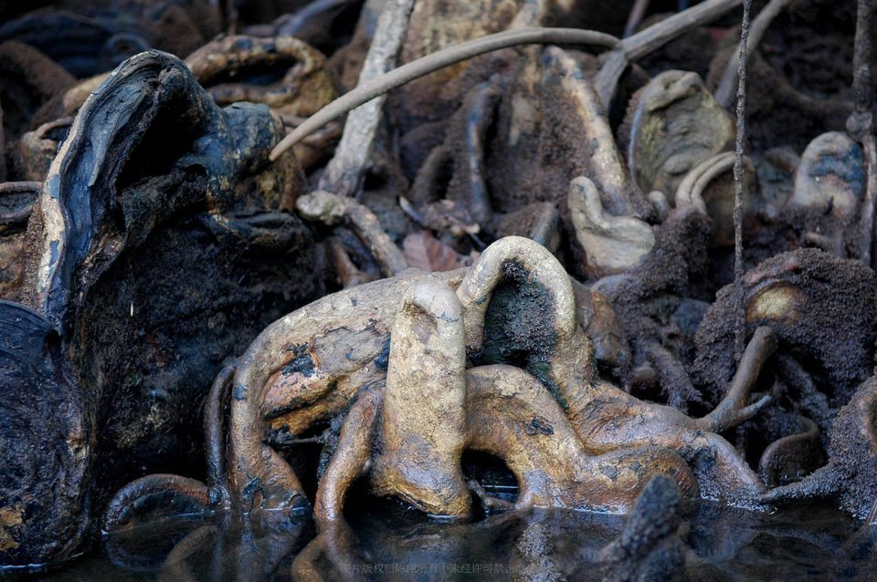
上午是最有势力的州长亲自给我们安排的丛林游，昨天晚餐的时候，州长就书面给确认了今天的具体事项，几点到几点在某地见面，几点到几点划双人艇进雨林，几点到几点在某个小村庄用午餐，几点返回，都确认地一丝不苟，做事风格有点像日本人。
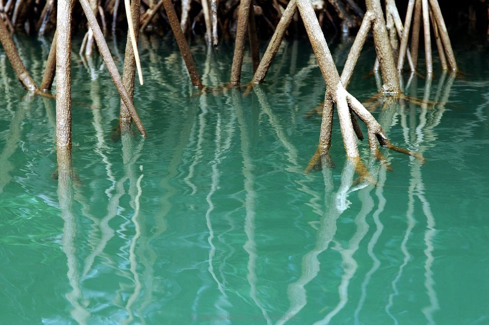
开始很一般，甚至可以说糟糕，但是越划越棒，千年树精、神奇光晕、被树蚁啃噬的朽木，非常有意思……
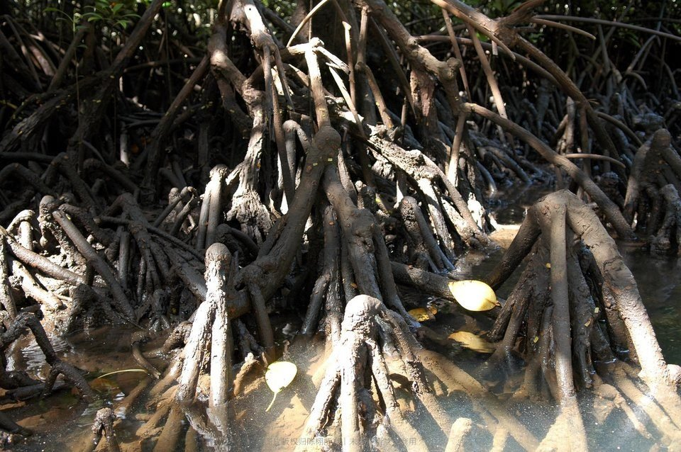
终点是个已经废弃的小村庄，但是还能通过石头的地基想象以前房屋的大小，州长向我们介绍了以前象征酋长权威的石椅，我看酋长不好当，这么难受的位子还抢着坐。
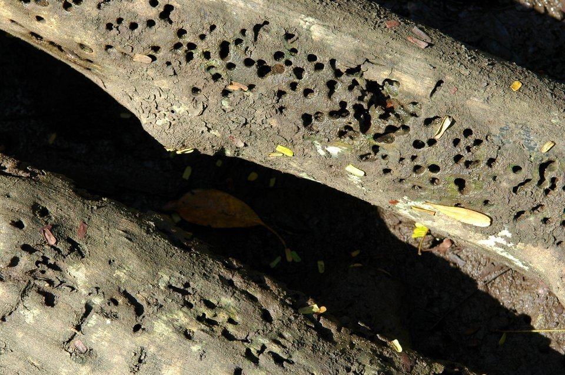
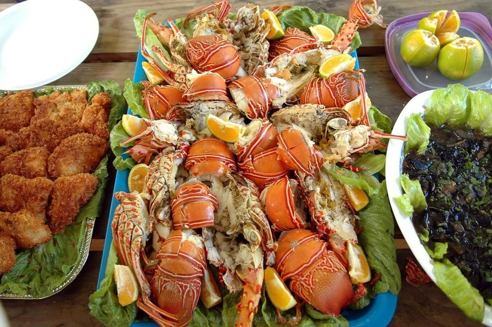
午餐本以为是从哪个酒店打包带来的便当，但是州长就是州长，竟然在这个废弃的小村庄里准备了丰盛的自助餐，有龙虾、海参、WAHOO鱼排、当地的番薯、水果……甚至还有新鲜的椰子，这比国内任何一个海鲜自助餐都实惠。
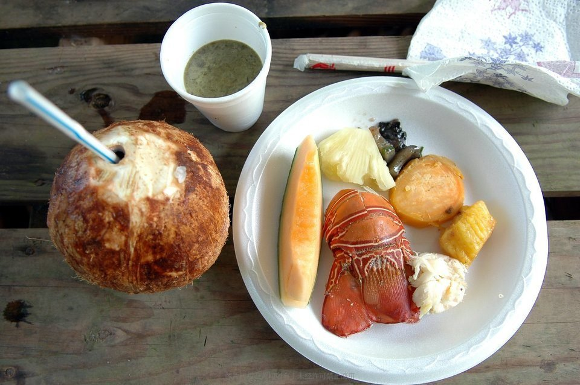
我拣了几样我自己爱吃的，一顿清午餐健康！
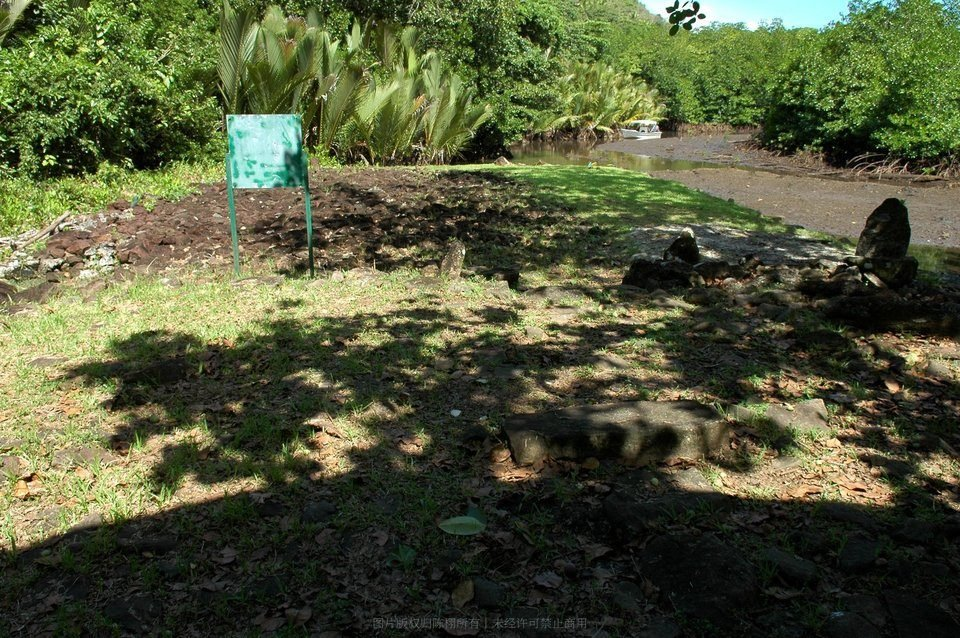
顺着石阶而上，我以为会看到美丽的海景，但是我错了，是一片坟墓，据说其中一个是上周五才下葬的，为了表示尊重我没有拍照，同时也怕不吉利。按当地人的习惯，生前无论在哪儿生活，死后都要回到出生的村庄安葬。这些坟墓中有一个很特别的，是用酒瓶砌的，我们都以为墓的主人一定很爱喝酒，死后用酒瓶做墓志铭，但是错了，州长讲那是二战时候下葬的墓，当时日本人在帕劳很喜欢喝酒，扔弃了很多酒瓶，当地人就捡回来当建筑材料用。我回头看了一下上周五下葬的墓，上面铺了一张铁皮……
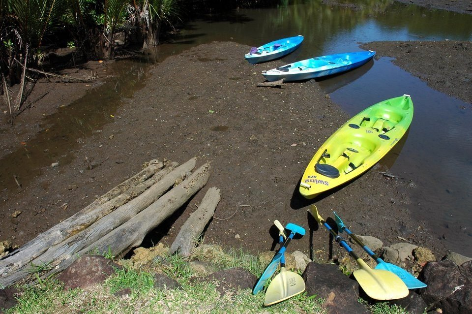
饭后据说还要划回去，所有人都晕菜了，只有我跃跃欲试，因为来的时候为了拍照根本就没有划，回去要好好体验一下！
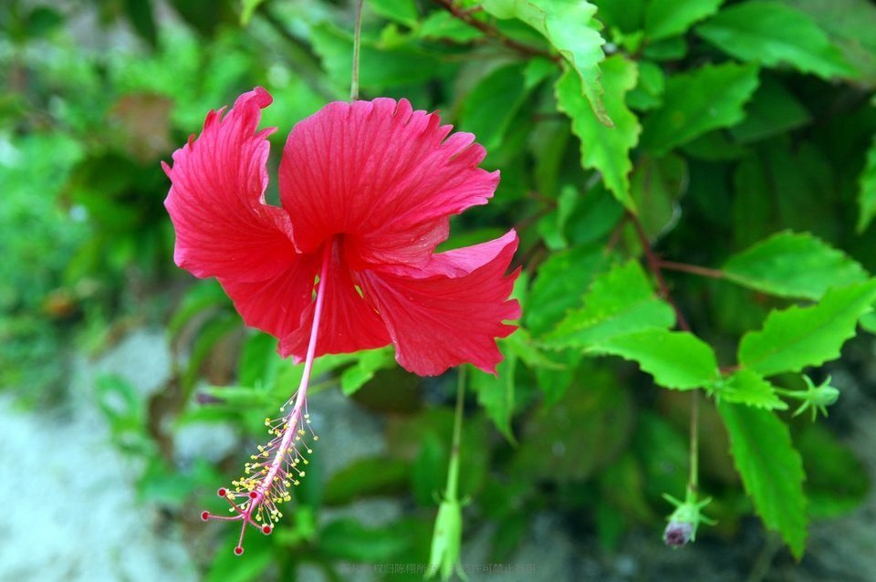
随后安排我们去参观了一个据说是纪念帕劳英雄的地方，看塑像那个英雄至少也是几百年前的人物了。 满院子都开着娇艳的热带花，这种花在夏威夷、关岛、塞班、帕劳哪儿哪儿都是，但是一时想不起名子来了，姑且叫它太平洋岛国花。
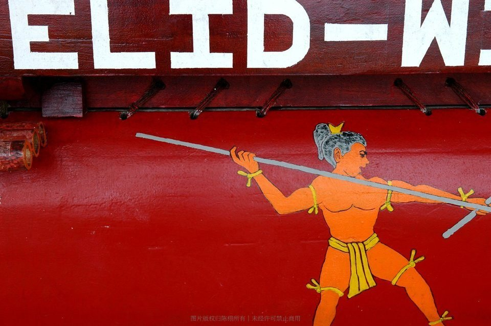
说英雄是与打渔有关的，毕竟要生存嘛。这里还展示了一条用整根木头雕成的大渔船，是根据以前的记载复制的，上面涂着鲜艳的颜色和古人捕鱼的场景，现在帕劳还在用图案上的方式捕捞龙虾，据说是用一把射枪不带任何氧气瓶潜水到10米深的地方，用射枪把龙虾射中在捕捞上来。在帕劳1磅龙虾5美金，当地人根本就不吃，因为各种各样的鱼都吃不过来。
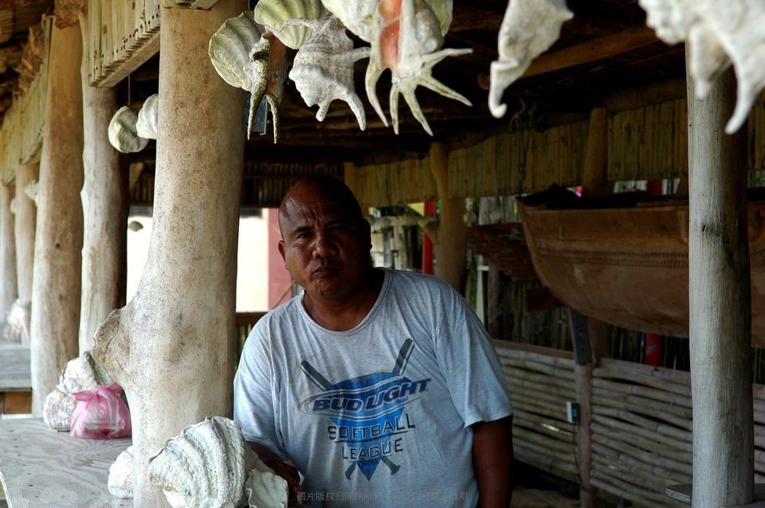
我还看到一个很特别的地方，看样子应该是卖东西的，可是没有陈列东西，里面的掌柜的也是很无聊地看着我们，柜台上挂的海螺似乎也是装饰用的。帕劳人生活是安逸的，人均GDP7000美金，比中国高多了，无论住的房子好坏，每家都至少有3部车，所以帕劳20000人，可是据说车有20000多部车。中国人生活压力真大呀！
回到酒店的时候看到了一辆School Bus，一群小学生刚好放学，我追上去不由分说拍了一阵，孩子们也很大方，摆出各种姿势配合，我挑了个最可爱的。
帕劳的行程到此已经基本结束了，《帕劳日记》也要告一段落了。小女孩的手势在中国可以解读为“我爱你”，但是在帕劳就要解读为“你好，欢迎你来帕劳！”
回程的飞机遇到几位爱潜水的国人，他们是去叶岛潜水后又到帕劳继续潜水的，带了重重的装备，据说这才是帕劳的标准玩法，毕竟世界10大潜水点中帕劳占了7个，陆地上看不到帕劳的真正美。帕劳我只能算是来过，很早地来过，但是没有领略过帕劳的真正美，会有那么一天，帕劳我会再来！
留言